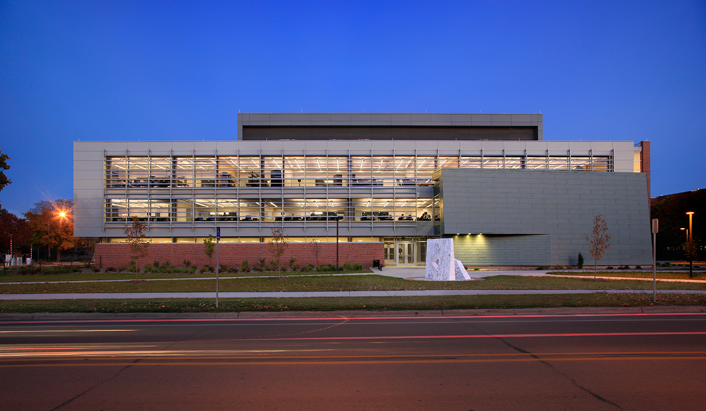

The Beginning
My journey in software engineering began in the halls of Iowa State University, where each step brought new challenges and opportunities. As a sophomore navigating the complex world of programming, I've discovered that success isn't just about writing code – it's about perseverance, community, and continuous learning.
"The biggest challenge wasn't learning to code – it was learning to believe in myself and embrace the process of growth."
Through the support of the ISU community, particularly in the Software Engineering Club and during late-night study sessions in Coover Hall, I found my path forward. Each debugging session and project deadline taught me valuable lessons about resilience and the importance of collaboration.